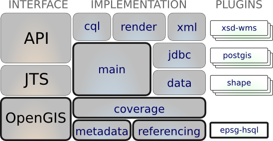

OpenGIS¶
Interfaces for GeoSpatial concepts, often defined by the OGC or ISO standards bodies. The interfaces in this module serve as a great reference if you do not have the time to purchase and read the official standards documents. Approach the standards using an environment you are comfortable with - Java!
GeoTools is all about implementing spatial solutions, and we do our very best to follow a don’t invent here policy (rather than get off topic). By referencing standards we are able to use well understood names for common spatial ideas and constructs.
The gt-opengis module provides:
- interfaces implemented by gt-main such as Feature, FeatureType, Filter and Function
- interfaces implemented by gt-coverage such as GridCoverage
- interfaces implemented by gt-referencing such as CoordinateReferenceSystem
- interfaces implemented by gt-metadata such as Citation
For more information on the standards covered by the library as whole: Standards Covered
Reference
Maven:
<dependency>
<groupId>org.geotools</groupId>
<artifactId>gt-opengis</artifactId>
<version>${geotools.version}</version>
</dependency>
Contents